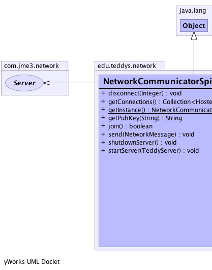
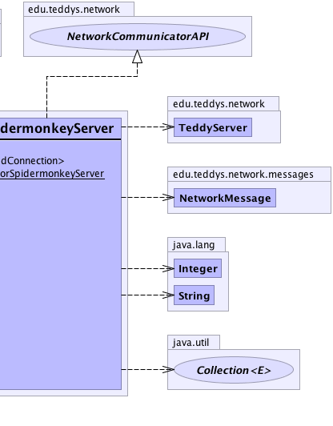

edu.teddys.network.NetworkCommunicatorSpidermonkeyServer
edu.teddys.network.NetworkCommunicatorSpidermonkeyServer
|
||||||||||
| PREV CLASS NEXT CLASS | FRAMES NO FRAMES | |||||||||
| SUMMARY: NESTED | FIELD | CONSTR | METHOD | DETAIL: FIELD | CONSTR | METHOD | |||||||||
java.lang.Object
public class NetworkCommunicatorSpidermonkeyServer
An implementation of the NetworkCommunicatorAPI.
NetworkCommunicatorAPI|  |  |
| Method Summary | |
|---|---|
void |
disconnect(java.lang.Integer clientID)
Destroy the active session for the specified user. |
java.util.Collection<com.jme3.network.HostedConnection> |
getConnections()
|
static NetworkCommunicatorSpidermonkeyServer |
getInstance()
|
java.lang.String |
getPubKey(java.lang.String pubKeyClient)
Get the public key from the server for encryption reasons. |
boolean |
join()
Join a new client to the list of users. |
void |
send(NetworkMessage message)
Send messages to the server. |
void |
shutdownServer()
Shut down the server if it is currently running. |
void |
startServer(TeddyServer server)
Start the SpiderMonkey server. |
| Methods inherited from class java.lang.Object |
|---|
clone, equals, finalize, getClass, hashCode, notify, notifyAll, toString, wait, wait, wait |
| Method Detail |
|---|
public static NetworkCommunicatorSpidermonkeyServer getInstance()
public void startServer(TeddyServer server)
server - The TeddyServer instance. Necessary to set a ConnectionListener
that is informed of all connection-related stuff.ConnectionListenerpublic void shutdownServer()
public java.lang.String getPubKey(java.lang.String pubKeyClient)
NetworkCommunicatorAPI
getPubKey in interface NetworkCommunicatorAPIpubKeyClient - The key from the client so that the public key
from the server can be encrypted.
public void send(NetworkMessage message)
NetworkCommunicatorAPI
send in interface NetworkCommunicatorAPImessage - Some NetworkMessagepublic boolean join()
NetworkCommunicatorAPI
join in interface NetworkCommunicatorAPIpublic void disconnect(java.lang.Integer clientID)
NetworkCommunicatorAPI
disconnect in interface NetworkCommunicatorAPIpublic java.util.Collection<com.jme3.network.HostedConnection> getConnections()
|
||||||||||
| PREV CLASS NEXT CLASS | FRAMES NO FRAMES | |||||||||
| SUMMARY: NESTED | FIELD | CONSTR | METHOD | DETAIL: FIELD | CONSTR | METHOD | |||||||||